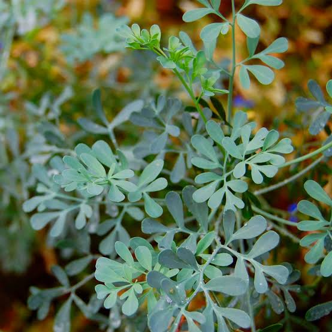
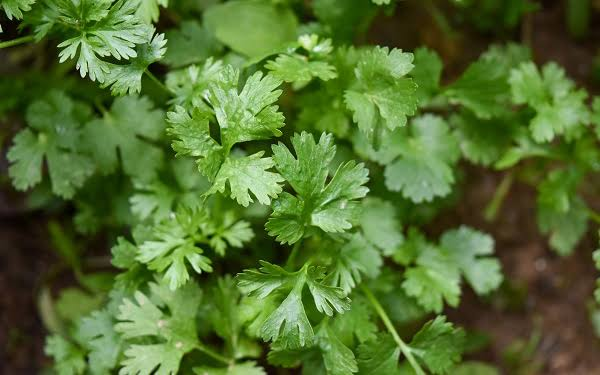
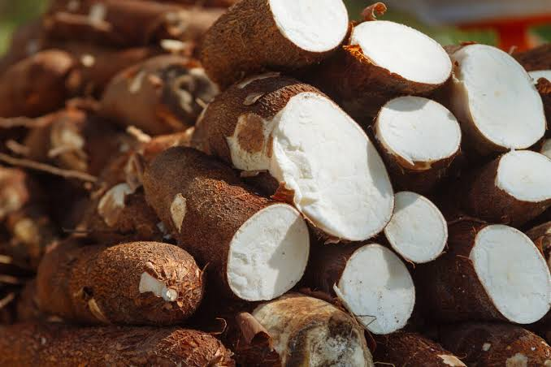
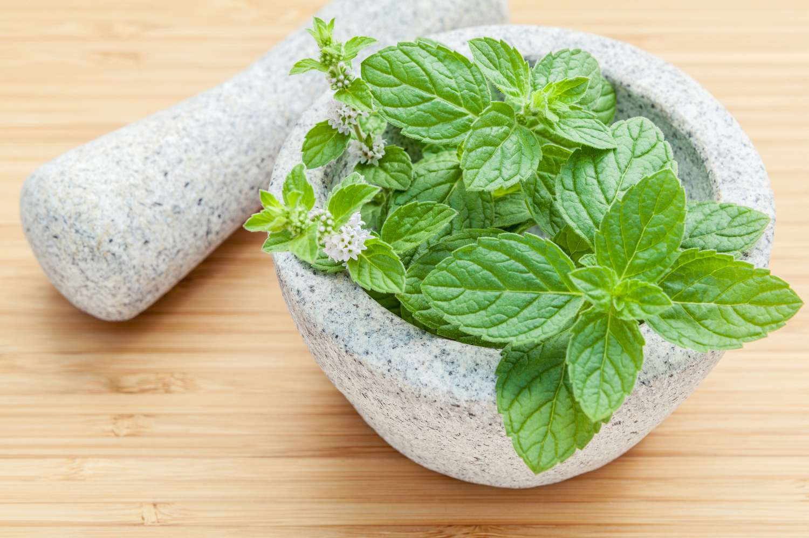
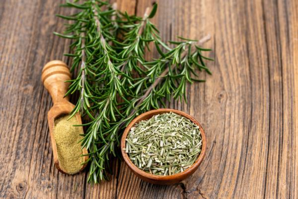
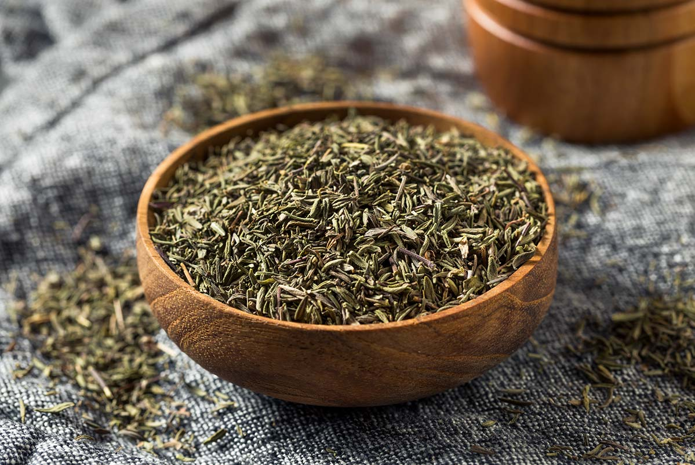

La ruda era una planta medicinal ampliamente utilizada por los mayas para una variedad de propósitos.
Algunos de los usos medicinales de la ruda entre los mayas incluyen:
1. Tratamiento de trastornos gastrointestinales: La ruda se usaba para aliviar el dolor abdominal, la
diarrea y otros problemas digestivos.
2. Alivio de dolores de cabeza: Se creía que la ruda tenía propiedades analgésicas y se usaba para
tratar dolores de cabeza.
3. Protección contra insectos: Los mayas usaban la ruda para repeler insectos y prevenir picaduras.
4. Tratamiento de enfermedades respiratorias: La ruda se usaba para aliviar los síntomas de enfermedades
respiratorias como el asma y la bronquitis.
5. Propiedades antiinflamatorias: La ruda se usaba como antiinflamatorio para aliviar el dolor y la
inflamación en diferentes partes del cuerpo.
6. Estimulación del sistema nervioso: Los mayas creían que la ruda tenía efectos estimulantes sobre el
sistema nervioso y se usaba para aliviar la fatiga y mejorar la concentración.
La planta llamada Xtabentun, que lleva el mismo nombre de la bebida, es en realidad una flor que crece en la península de Yucatán, y que los mayas consideraban sagrada por su belleza y aroma. La flor de xtabentun se usaba en la medicina tradicional maya para tratar diversos trastornos, como problemas respiratorios, dolores musculares y menstruales, y para estimular el apetito. Además, se utilizaba como un relajante natural y como un remedio para el insomnio.

El cilantro. Algunos de los usos medicinales del cilantro entre los mayas incluyen:
1. Alivio de trastornos gastrointestinales: El cilantro se usaba para tratar problemas
digestivos como la indigestión, la diarrea y el dolor abdominal.
2. Propiedades antiinflamatorias: El cilantro se usaba como antiinflamatorio para aliviar
el dolor y la inflamación en diferentes partes del cuerpo.
3. Estimulación del apetito: El cilantro se usaba para estimular el apetito y mejorar la digestión.
4. Propiedades antioxidantes: El cilantro se considera una fuente rica en antioxidantes
naturales que ayudan a proteger el cuerpo contra el daño celular y el envejecimiento.

La hoja de naranja
1. Alivio de trastornos gastrointestinales: La hoja de naranja agria se usaba para tratar problemas digestivos
como la indigestión, la diarrea y el dolor abdominal.
2. Estimulación del apetito: La hoja de naranja agria se usaba para estimular el apetito y mejorar la digestión.
3. Propiedades calmantes: La hoja de naranja agria se usaba como sedante natural para tratar la ansiedad y otros
problemas relacionados con el estrés.
4. Alivio de dolores musculares: Se creía que la hoja de naranja agria tenía propiedades analgésicas y se usaba
para aliviar dolores musculares y otros tipos de dolor.
5. Tratamiento de enfermedades respiratorias: La hoja de naranja agria se usaba para aliviar los síntomas de
enfermedades respiratorias como el asma y la bronquitis.
6. Propiedades antibacterianas: Se creía que la hoja de naranja agria tenía propiedades antibacterianas y se usaba
para tratar infecciones.

La hoja de aguacate:
1. Alivio de trastornos gastrointestinales: La hoja de aguacate se usaba para tratar problemas
digestivos como la diarrea, la indigestión y la acidez estomacal.
2. Estimulación del sistema inmunológico: La hoja de aguacate se usaba para estimular el sistema
inmunológico y ayudar al cuerpo a combatir enfermedades.
3. Propiedades diuréticas: La hoja de aguacate se usaba como diurético para ayudar a eliminar el
exceso de líquidos del cuerpo.
4. Propiedades antimicrobianas: Se creía que la hoja de aguacate tenía propiedades antimicrobianas
y se usaba para tratar infecciones.
La chaya:
1. Alivio de trastornos gastrointestinales: La chaya se usaba para tratar problemas digestivos
como la diarrea, la indigestión y la acidez estomacal.
2. Estimulación del sistema inmunológico: La chaya se usaba para estimular el sistema inmunológico
y ayudar al cuerpo a combatir enfermedades.
3. Mejora de la visión: Se cree que la chaya contiene altos niveles de vitamina A, que es esencial
para la salud ocular, y se usaba para mejorar la visión.
4. Propiedades antiinflamatorias: La chaya se usaba para reducir la inflamación y aliviar el dolor
asociado con enfermedades como la artritis y otras afecciones inflamatorias.
5. Propiedades antianémicas: Se cree que la chaya es rica en hierro y se usaba para tratar la anemia.

La hoja de chicozapote:
1. Alivio de trastornos gastrointestinales: La hoja de chicozapote se usaba para tratar problemas digestivos
como la diarrea, la indigestión y la acidez estomacal.
2. Control de la diabetes: Se cree que la hoja de chicozapote tiene propiedades hipoglucémicas y se usaba para
ayudar a controlar la diabetes.
3. Propiedades antiinflamatorias: La hoja de chicozapote se usaba para reducir la inflamación y aliviar el dolor
asociado con enfermedades como la artritis y otras afecciones inflamatorias.
4. Propiedades analgésicas: La hoja de chicozapote se usaba como analgésico natural para aliviar el dolor.
5. Estimulación del sistema inmunológico: La hoja de chicozapote se usaba para estimular el sistema inmunológico
y ayudar al cuerpo a combatir enfermedades.
6. Propiedades antianémicas: Se cree que la hoja de chicozapote es rica en hierro y se usaba para tratar la anemia.

La hoja de guanábana:
1. Alivio de trastornos gastrointestinales: La hoja de guanábana se usaba para tratar problemas
digestivos como la diarrea, la indigestión y la acidez estomacal.
2. Control de la diabetes: Se cree que la hoja de guanábana tiene propiedades hipoglucémicas y se
usaba para ayudar a controlar la diabetes.
3. Propiedades antiinflamatorias: La hoja de guanábana se usaba para reducir la inflamación y aliviar
el dolor asociado con enfermedades como la artritis y otras afecciones inflamatorias.
4. Propiedades antitumorales: Se cree que la hoja de guanábana tiene propiedades antitumorales y se
usaba como parte del tratamiento para el cáncer.
5. Propiedades antiparasitarias: La hoja de guanábana se usaba para tratar infecciones parasitarias y
enfermedades como la malaria.
6. Estimulación del sistema inmunológico: La hoja de guanábana se usaba para estimular el sistema
inmunológico y ayudar al cuerpo a combatir enfermedades.
7. Propiedades sedantes y ansiolíticas: La hoja de guanábana se usaba para aliviar el estrés y la
ansiedad y ayudar a mejorar el sueño.

El epazote
1. Alivio de trastornos gastrointestinales: La hoja de epazote se usaba para tratar problemas
digestivos como la diarrea, el dolor abdominal, la flatulencia y la indigestión.
2. Propiedades antiparasitarias: La hoja de epazote se usaba para tratar infecciones parasitarias,
especialmente aquellas causadas por lombrices intestinales y otros parásitos.
3. Estimulación del sistema nervioso: La hoja de epazote se usaba como estimulante nervioso y para
tratar problemas como la depresión y la fatiga.
4. Propiedades antiinflamatorias: La hoja de epazote se usaba para reducir la inflamación y aliviar el dolor asociado con enfermedades como la artritis y otras afecciones inflamatorias.
5. Propiedades analgésicas: La hoja de epazote se usaba como analgésico natural para aliviar el dolor.
6. Propiedades antiespasmódicas: La hoja de epazote se usaba para aliviar los espasmos musculares y calmar los nervios.
7. Propiedades diuréticas: La hoja de epazote se usaba como diurético natural para aumentar la producción de orina y eliminar líquidos del cuerpo.ejorar la concentración.

Los antiguos mayas usaban la savia de la chicle o chicozapote (Manilkara zapota) como una especie
de goma de mascar. La savia se extraía de la corteza del árbol y se cocía para hacer una sustancia
gomosa y maleable. Los mayas utilizaban esta goma de mascar como una forma de limpiar los dientes y
refrescar el aliento, así como para calmar el hambre y la sed durante largas caminatas.
Además de su uso como goma de mascar, los mayas también utilizaban la chicle en la fabricación de
bolas para juegos y en la construcción de edificios y templos. La chicle era un material muy valioso
para los antiguos mayas y tenía un valor similar al del oro. De hecho, la palabra "chicle" proviene
del náhuatl "tzictli", que significa "resina de chicozapote", y fue adoptada por los conquistadores
españoles después de la llegada a América.

Se sabe muy poco de esta planta, de lo poco que se sabe, es que fue muy apreciaba en la medicina y gastronomia maya

Se sabe muy poco sobre las enfermedades que los antiguos mayas trataban con la yuca, pero se sabe que se utilizaba como un remedio para una serie de dolencias y problemas de salud. Algunos de los usos medicinales de la yuca incluyen su uso como analgésico, para tratar infecciones, para aliviar dolores estomacales y para reducir la fiebre.

Es una planta que ha sido utilizada tradicionalmente por los mayas para tratar diversas dolencias. Entre los usos medicinales que le daban se incluyen su uso como diurético, para bajar la presión arterial, para aliviar dolores de estómago, para tratar infecciones respiratorias y como tratamiento para enfermedades de la piel.

• Tratamiento de enfermedades respiratorias: los mayas utilizaban la hoja de maguey para aliviar
síntomas de enfermedades respiratorias, como tos, congestión nasal y problemas de sinusitis.
• Alivio de dolores de estómago: se utilizaba la hoja de maguey en infusiones o como cataplasma para
aliviar dolores estomacales, así como para tratar la diarrea.
• Cicatrización de heridas: los mayas aplicaban la hoja de maguey directamente sobre heridas y
cortes para facilitar su cicatrización.

1. Tratamiento de infecciones: el ajo se utilizaba para tratar infecciones de todo tipo, incluyendo
infecciones de la piel, de los ojos, del oído y del tracto respiratorio.
2. Alivio del dolor: el ajo tenía propiedades analgésicas y se utilizaba para aliviar el dolor de cabeza,
dolor de muelas y otros tipos de dolor.
3. Mejora de la circulación: el ajo se ha utilizado tradicionalmente para mejorar la circulación sanguínea
y prevenir enfermedades cardiovasculares.
4. Reducción de la inflamación: se creía que el ajo tenía propiedades antiinflamantes.

Los mayas utilizaban la menta con fines medicinales para aliviar diversos malestares como dolor de cabeza, indigestión, náuseas y fiebre. También se utilizaba como tónico estomacal y para tratar dolores menstruales y cólicos. Además, la menta se usaba para tratar problemas respiratorios como el asma y la tos.

Los mayas utilizaban el romero con fines medicinales para tratar diversos trastornos del sistema digestivo, incluyendo la indigestión, la acidez estomacal y los cólicos. También se utilizaba como tónico para mejorar la circulación sanguínea y aliviar dolores musculares y articulares. Además, el romero se utilizaba para tratar problemas respiratorios como el asma y la tos, y como remedio para la fatiga y el agotamiento mental.

Los mayas utilizaban el tomillo con fines medicinales para tratar dolores de estómago y problemas respiratorios, como la tos y la bronquitis. También lo usaban como un antiséptico y para tratar infecciones en la piel, así como para mejorar la digestión y el apetito. Además, el tomillo era utilizado como un estimulante y para tratar dolores de cabeza.
• Dolores de cabeza y mareos: se preparaba una infusión de las hojas y se tomaba caliente.
• Trastornos digestivos: se preparaba una infusión con las hojas y se tomaba después de las comidas.
• Dolores musculares: se aplicaba una cataplasma de hojas de albahaca machacadas sobre la zona afectada.
• Antiespasmódico: se preparaba una infusión con las hojas y se tomaba para aliviar espasmos musculares.